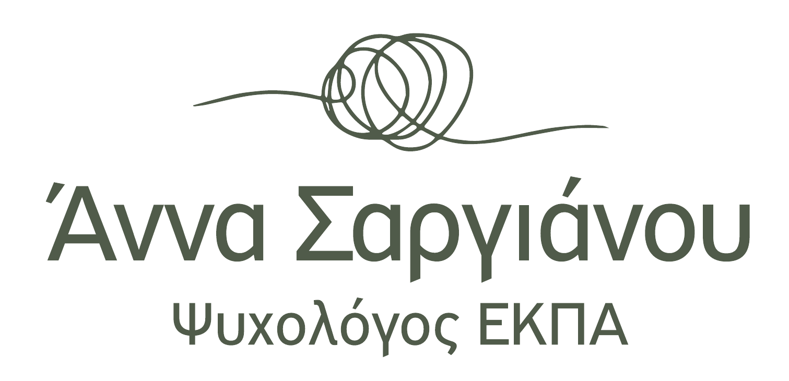

Ατομική Ψυχοθεραπεία Ενηλίκων
Ένας ασφαλής χώρος προσωπικής διερεύνησης και ψυχοθεραπευτικής υποστήριξης.

ΒΙΟΓΡΑΦΙΚΟ
Η Άννα Σαργιάνου είναι Ψυχολόγος, απόφοιτη του Τμήματος Ψυχολογίας του Εθνικού και Καποδιστριακού Πανεπιστημίου Αθηνών. Είναι κάτοχος μεταπτυχιακού τίτλου από την Ιατρική Σχολή Αθηνών, με εξειδίκευση στην Αναπτυξιακή και Εφηβική Υγεία, ενώ εκπαιδεύεται στη Συστημική Ψυχοθεραπεία και Συμβουλευτική.
Έχει εργαστεί σε δομές ψυχικής υγείας, ειδικών θεραπειών και εκπαιδευτικά πλαίσια, παρέχοντας ψυχοθεραπευτική υποστήριξη, ψυχομετρική αξιολόγηση, ψυχοεκπαίδευση και συμβουλευτική. Στο πλαίσιο της επαγγελματικής της πορείας έχει συνεργαστεί με παιδιά, εφήβους, ενήλικες και οικογένειες, καθώς και με επαγγελματίες διαφορετικών ειδικοτήτων.
Στη θεραπευτική διαδικασία δίνει ιδιαίτερη σημασία στη δημιουργία μιας ασφαλούς και ουσιαστικής θεραπευτικής σχέσης, μέσα στην οποία κάθε άνθρωπος μπορεί να εκφράσει όσα τον απασχολούν, να κατανοήσει καλύτερα τον εαυτό του και τις σχέσεις του και να αναζητήσει νέους τρόπους διαχείρισης των δυσκολιών που αντιμετωπίζει.
Παράλληλα, έχει συμμετάσχει σε ερευνητικές δημοσιεύσεις και διεθνή συνέδρια με θεματολογία γύρω από την ψυχική υγεία, την ενδυνάμωση και την ψυχολογική υποστήριξη σε περιόδους κρίσης.
ΥΠΗΡΕΣΙΕΣ
Ένας ασφαλής χώρος προσωπικής διερεύνησης και ψυχοθεραπευτικής υποστήριξης.
Ψυχοθεραπευτική υποστήριξη παιδιών και εφήβων.
Υποστήριξη της γονεϊκής σχέσης και των προκλήσεων που προκύπτουν στην οικογένεια.
Εστίαση στη σχέση, την επικοινωνία και τη μεταξύ των συντρόφων αλληλεπίδραση.
ΕΚΠΑΙΔΕΥΣΗ & ΕΜΠΕΙΡΙΑ
Συμβουλευτική γονέων • Ψυχοεκπαίδευση • Ψυχομετρική αξιολόγηση
ΕΠΙΚΟΙΝΩΝΙΑ
Για πληροφορίες ή για να προγραμματίσετε μία συνάντηση, μπορείτε να επικοινωνήσετε τηλεφωνικά ή μέσω email.
Διεύθυνση
Αγίου Ιωάννου 63, Αγία Παρασκευή
Ισόγειο
Είσοδος εντός του εμπορικού κέντρου Φοίνικας
(πεζόδρομος Ελευθερίας & Ιερολοχιτών)
Τηλέφωνο
697 672 1718